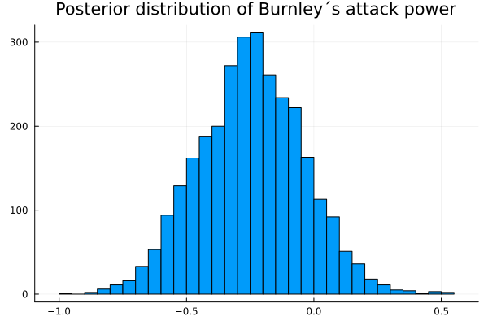
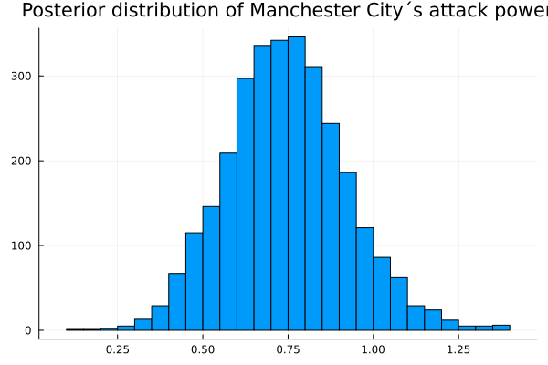
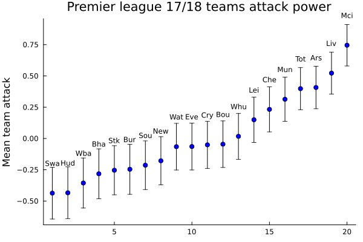
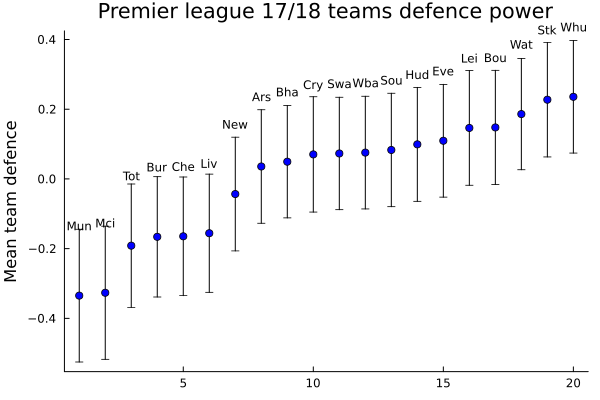
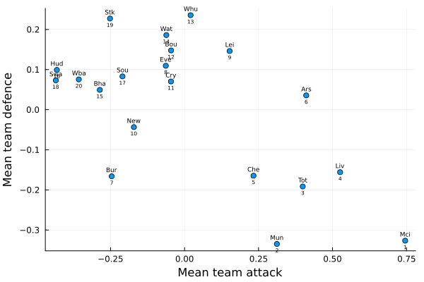
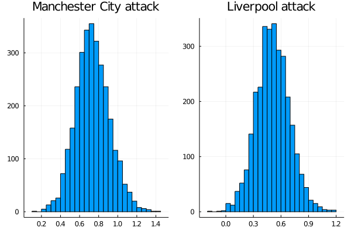
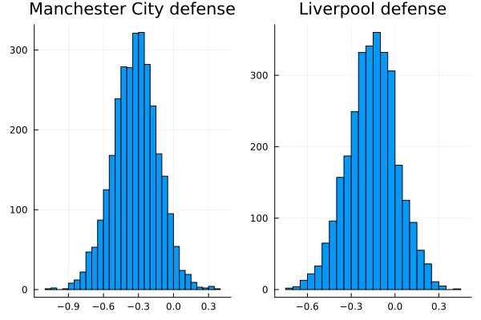
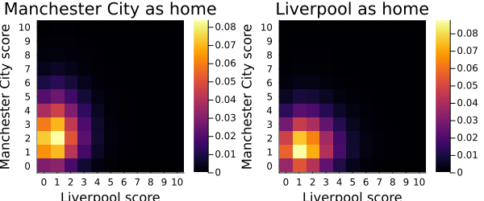

Chapter 7 Football simulation
7.1 Creating our conjectures
If there is one thing we can all agree on, it is that the reality in which we live is complex. The explanation for the things we usually see and seem natural in our daily lives, is usually quite complex and requires abstraction from what “is simply seen”.
In order to give an explanation and gain a deeper understanding of the things around us, we tend to generate models that seek to explain them in a simple and generalized way. In this way we can reduce the noise of our observations to general rules that “govern” them.
For example, it is obvious to everyone that if we push a glass it will move in the same direction as we did. We also know that if we keep pushing it and it goes beyond the limits of the table, it will fall to the floor. But one thing is to have the intuition of what’s going to happen, and another is to have an understanding of the laws that govern that movement. In this case, they are the Newton´s Law´s of motion:
\(\overrightarrow{F} = m \overrightarrow{a}\)
In this way, and with only one formula, it is possible to gain an understanding that is generalizable to many aspects of reality.
7.1.0.1 Observable variables vs Latent variables
Now, it is worth noting that in this case all the variables that make up our model are observable. This means that they can be measured directly.
In the case of a glass, we could weigh it with a scale. Then, by pushing it, we could measure the acceleration it acquired and from these two measurements we could obtain the force we applied to it. So, every parameter of the model is fully defined.
However, as we try to advance in our understanding of reality, we arrive at more and more complex models and many times we are not so lucky to be able to define them with simple observable variables.
For example, this is very common in the economic sciences, where models are created with variables such as “quality of life”. Economists will try to measure this latent variable with other variables that can be observed (such as GDP per capita, schooling rate, number of hospitals for a certain number of inhabitants, etc), but that do not have an obvious and direct relationship as if they had newton’s equations.
This type of latent variables are used in different models to gain greater abstraction and to be able to obtain information that is not found at first sight in the data. For example, in the case of economics, from concrete measures of a country’s economy it is possible to generalize knowledge and be able to infer an abstract variable such as quality of life.
7.1.1 Bayesian hierarchical models
The Bayesian framework allows us to build statistical models that can generalize the information obtained from the data and make inferences from latent variables.
A nice way to think about this kind of models is that they allow us to build our “story” about which are the variables that generate the data we are observing. Basically, they allow us to increase the “depth” of our model by indicating that the parameters of our prior distributions also follow other probability distributions.
This sure is sounding very strange. Don’t worry, let’s move on to an example to clarify it.
7.1.1.1 Football analysis
Let’s imagine for a moment that we are brilliant statisticians. We find ourselves looking for new interesting challenges to solve and we come across a sports bookmaker. They tell us that they want to expand into football betting and that they would like us to be able to build a model that allows them to analyze the strengths and weaknesses of English Premier League teams. They are interested because they want to be able to predict possible outcomes and thus be able to price the bets.
The problem is that, as they have never worked in this sector before, they only have the results of the league matches. So what can we do? First of all, let’s import the packages we will be using through the chapter.
using JSON
using DataFrames
using StatsPlots
using Turing
using LinearAlgebraWe have the data stored in a specific format called JSON, so the first thing to do is to parse and visualize it
england_league = JSON.parsefile("./07_football_simulation/matches_England.json")
matches_df = DataFrame(home = [], away = [], score_home = [], score_away = [])matches = []
for match in england_league
push!(matches, split(match["label"], ","))
endfor match in matches
home, away = split(match[1], " - ")
score_home, score_away = split(match[2], " - ")
push!(matches_df,[home, away, parse(Int,score_home), parse(Int,score_away)])
endmatches_df## 380×4 DataFrame
## Row │ home away score_home score_away
## │ Any Any Any Any
## ─────┼────────────────────────────────────────────────────────────────────────
## 1 │ Burnley AFC Bournemouth 1 2
## 2 │ Crystal Palace West Bromwich Albion 2 0
## 3 │ Huddersfield Town Arsenal 0 1
## 4 │ Liverpool Brighton & Hove Albion 4 0
## 5 │ Manchester United Watford 1 0
## 6 │ Newcastle United Chelsea 3 0
## 7 │ Southampton Manchester City 0 1
## 8 │ Swansea City Stoke City 1 2
## ⋮ │ ⋮ ⋮ ⋮ ⋮
## 374 │ Chelsea Burnley 2 3
## 375 │ Crystal Palace Huddersfield Town 0 3
## 376 │ Everton Stoke City 1 0
## 377 │ Southampton Swansea City 0 0
## 378 │ West Bromwich Albion AFC Bournemouth 1 0
## 379 │ Watford Liverpool 3 3
## 380 │ Arsenal Leicester City 4 3
## 365 rows omittedteams = unique(collect(matches_df[:,1]))## 20-element Vector{Any}:
## "Burnley"
## "Crystal Palace"
## "Huddersfield Town"
## "Liverpool"
## "Manchester United"
## "Newcastle United"
## "Southampton"
## "Swansea City"
## "Tottenham Hotspur"
## "West Ham United"
## "Manchester City"
## "Leicester City"
## "Chelsea"
## "Arsenal"
## "Everton"
## "AFC Bournemouth"
## "Watford"
## "West Bromwich Albion"
## "Stoke City"
## "Brighton & Hove Albion"So, we have the data of the 380 matches that were played in the Premier League 2017/2018 and our challenge is to be able to analyze the characteristics of these teams.
A priori it may seem that we are missing data, that with the data we have we cannot infer “characteristics” specific to each team. At most, it might be possible to see who the teams that scored the most goals, the averages of goals per game or how the positions were after the tournament, but to obtain characteristics of the teams? how could we face this problem?
7.1.1.2 Creating our stories
Let’s see what information we have from our data: On one hand we have specified the names of each team and which one is local. On the other hand, we have the number of goals scored.
A possible approach to this data is to realize that the goals scored by each team can be modeled with a poisson distribution.
Why? You have to remember that this distribution describes “arrivals” - discrete events - in a continuum. For example, it is widely used to describe customer arrivals to a location as time passes or failures in continuous industrial processes (e.g. failure in the production of a pipe).
In this particular case, we could propose that the goals scored by a team are the discrete events that occur in the time continuum that the game last:
\(Score \sim Poisson(θ)\)
Well, we have an improvement. We’ve already told our model how to think about goals scored.
Now we can use the flexibility of Bayesianism to indicate what the “goal rate” of our Poisson depends on. You can think of it literally as the number of goals a team scores per unit of time. And this is where we have to take advantage of all the information provided by the data set.
As expected, this rate has to be particular to each match the team plays and take into account the opponent. We can therefore propose that the scoring rate of each team (in each particular match) depends on the “attacking power” of the team on the one hand, and the “defensive power” of the opponent on the other:
\(θ_{team1} \sim att_{team1} + def_{team2}\)
In this way we could be capturing, from the results of each game, the attack and defence strengths of each team.
Another latent variable that we could obtain, given the data, is if there is an effect that increases (or decreases) the goal rate related to whether the team is local or not. This would also help - in case there is indeed an effect - in not the attack and defence parameters be disrupted by having to “contain” that information.
\(θ_{home} \sim home + att_{home} + def_{away}\)
\(θ_{away} \sim att_{away} + def_{home}\)
This leaves one attack and one defense parameter for each team, and a global league parameter that indicates the effect of being local on the scoring rate.
7.1.1.3 Letting the information flow
We are already getting much closer to the initial goal we set. As a last step, we must be able to make the information flow between the two independent poissons that we proposed to model the score of each of the two teams that are playing. We need to do that precisely because we have proposed that the poissons are independent, but we need that when making the inference of the parameters the model can access the information from both scores so it can catch the correlation between them. In other words, we have to find a way to interconnect our model.
And that is exactly what hierarchical Bayesian models allow us to do. How? By letting us choose probability distributions for the parameters that represent the characteristics of both equipment. With the addition that these parameters will share the same prior distributions. Let’s see how:
The first thing to do, as we already know, is to assign the prior distributions of our attack and defense parameters. A reasonable idea would be to propose that they follow a normal distribution since it is consistent that there are some teams that have a very good defense, so the parameter would take negative values; or there may be others that have a very bad one, taking positive values (since they would “add up” to the goal rate of the opposing team). The normal distribution allows us to contemplate both cases.
Now, when choosing the parameters we are not going to stop and assign fixed numbers, but we will continue to deepen the model and add another layer of distributions:
\(att_{t} \sim Normal(μ_{att}, σ_{att})\)
\(def_{t} \sim Normal(μ_{def}, σ_{def})\)
Where the t sub-index is indicating us that there are a couple of these parameters for each team.
Then, as a last step to have our model defined, we have to assign the priority distributions that follow the parameters of each normal distribution. We have to define our hyper priors.
\(μ_{att}, μ_{def} \sim Normal(0, 0.1)\)
\(σ_{att}, σ_{def} \sim Exponential(1)\)
We must not forget the parameter that represents the advantage of being local
\(home \sim Normal(0,1)\).
Now that our model is fully define, let’s add one last restriction to the characteristics of the teams to make it easier to compare them: subtract the average of all the attack and defence powers from each one. In this way we will have the features centred on zero, with negative values for the teams that have less attacking power than the average and positive values for those that have more. As we already said, the opposite analysis applies to the defence, negative values are the ones that will indicate that a team has a strong defence as they will be “subtracting” from the scoring rate of the opponent. This is equivalent to introducing the restriction:
\(\sum att_{t} = 0\)
\(\sum def_{t} = 0\)
Let’s translate all this into Turing code:
@model function football_matches(home_teams, away_teams, score_home, score_away, teams)
# Hyper priors
σatt ~ Exponential(1)
σdef ~ Exponential(1)
μatt ~ Normal(0, 0.1)
μdef ~ Normal(0, 0.1)
home ~ Normal(0, 1)
# Team-specific effects
att ~ filldist(Normal(μatt, σatt), length(teams))
def ~ filldist(Normal(μdef, σdef), length(teams))
dict = Dict{String, Int64}()
for (i, team) in enumerate(teams)
dict[team] = i
end
# Zero-sum constrains
offset = mean(att) + mean(def)
log_θ_home = Vector{Real}(undef, length(home_teams))
log_θ_away = Vector{Real}(undef, length(home_teams))
# Modeling score-rate and scores (as many as there were games in the league)
for i in 1:length(home_teams)
# score-rate
log_θ_home[i] = home + att[dict[home_teams[i]]] + def[dict[away_teams[i]]] - offset
log_θ_away[i] = att[dict[away_teams[i]]] + def[dict[home_teams[i]]] - offset
# scores
score_home[i] ~ LogPoisson(log_θ_home[i])
score_away[i] ~ LogPoisson(log_θ_away[i])
end
endAs you can see, the Turing code is very clear and direct. In the first block we define our hyperpriors for the distributions of the characteristics of the equipment.
In the second one, we define the priors distributions that will encapsulate the information about the attack and defense powers of the teams. With the filldist function we are telling Turing that we need as many of these parameters as there are teams in the league length(teams)
Then, we calculate the average of the defense and attack parameters that we are going to use to centralize those variables, and we use the LogPoisson distribution to allow the theta to take some negative value in the inference process and give more sensitivity to the parameters that make it up.
As we said before, we will model the thetas for each game played in the league, that’s why the for of the last block goes from 1 to length(home_teams), which is the list that contains who was the local team of each game played.
So let´s run it and see if all of this effort was worth it:
model = football_matches(matches_df[:,1], matches_df[:,2], matches_df[:,3], matches_df[:,4], teams)posterior = sample(model, NUTS(), 3000)7.1.1.4 Analyzing the results
In order to compare and corroborate that the inference of our model makes sense, it is key to have the ranking table of how the teams actually performed in the 2017/2018 Premier League.
table_positions = [11, 5, 9, 4, 13, 14, 1, 15, 12, 6, 2, 16, 10, 17, 20, 3, 7, 8, 19, 18]
games_won = [32, 25, 23, 21, 21, 19, 14, 13, 12, 12, 11, 11, 10, 11, 9, 9, 7, 8, 7, 6]
teams_ = []
for i in table_positions
push!(teams_, teams[i])
end
table_position_df = DataFrame(Table_of_positions = teams_, Wins = games_won)Let’s now explore a little bit the a posteriori values we obtained.
post_att = collect(get(posterior, :att)[1])
post_def = collect(get(posterior, :def)[1])
post_home = collect(get(posterior, :home)[1])As a first measure to analyze, it is interesting to see and quantify (if any) the effect that being local has on the score rate:
histogram(post_home, legend=false, normalized=true);
xlabel!("Home parameter");
ylabel!("Probability density");
title!("Posterior distribution of home parameter")
mean(post_home)## 0.33801600423748307So, to include in the model the parameter home was a good idea. indeed being local provides a very big advantage.
Beyond the fact that it is interesting to be able to quantify how much the location influences the scoring rate of the teams, including it in the analysis allow us to have better estimates of the defense and attack parameters of the teams. This is true because if it had not been included, this positive effect would have manifested itself in the only parameters it would have found, the attack and defense parameters, deforming the real measure of these.
So, being confident that we are on the right track, let´s find the attack and defence parameters of each team.
teams_att = []
teams_def = []
for i in 1:length(post_att)
push!(teams_att, post_att[i])
push!(teams_def, post_def[i])
endThis way we obtain all the samples of the posterior distributions for each one of the parameters of each equipment. Scroll right to explore the entire array.
teams_att## 20-element Vector{Any}:
## [-0.09865488953424972; -0.025244954115419924; … ; -0.19415682480093374; 0.12779472625535057;;]
## [0.1384402020942468; 0.08162959592879063; … ; 0.1445406734018432; 0.1852064417185192;;]
## [-0.691277035127657; -0.6187014722810115; … ; -0.25411674164548126; -0.14808216929707219;;]
## [0.3263148184073282; 0.23213150932933735; … ; 0.7069802955195306; 0.6979512352684843;;]
## [0.23761050569756342; 0.18359000069558262; … ; 0.36241460542173487; 0.564993126219974;;]
## [-0.35141029492655446; -0.3790466244019617; … ; 0.29482212659760426; -0.2673547890098063;;]
## [-0.2008292583376172; -0.1495311676701413; … ; -0.09796405397565308; 0.10944366752033868;;]
## [-0.6845449749592407; -0.7121421362165261; … ; -0.21299043488896582; -0.19096586341076682;;]
## [0.2273504814921832; 0.29421499293486403; … ; 0.503727441127193; 0.665967059027625;;]
## [-0.01257432941558401; -0.029276284935895406; … ; 0.5174334904949169; -0.09202275113396038;;]
## [0.6434611077257765; 0.6739283142738687; … ; 0.8699572892453088; 1.0330185540480306;;]
## [0.2396996905379325; 0.31871229944702933; … ; 0.32128441332395097; 0.3715004676167119;;]
## [0.00021189365137644356; -0.03584644747155941; … ; 0.40441834070650784; 0.44822378882211866;;]
## [0.13483311398017164; 0.18043990995393921; … ; 0.5001073083393018; 0.6360215717265337;;]
## [-0.1066798907077674; -0.09846638263783151; … ; 0.12253896167678256; 0.16784231074497324;;]
## [-0.21154972688096263; -0.0958943337918969; … ; 0.16737248962377066; 0.14461778111352452;;]
## [-0.33201356777036034; -0.3407413814287532; … ; 0.12422173051576219; 0.16384814744247053;;]
## [-0.4214536953897381; -0.48145175683188113; … ; -0.20622875537877228; -0.22154282004364462;;]
## [-0.37791216308312403; -0.21843987541930215; … ; -0.035686905644709416; -0.056717603689513285;;]
## [-0.37788781985742087; -0.452949803312749; … ; -0.08239511212592476; -0.11135438252730602;;]For example, if we would like to see the posterior distribution of the attack parameter for Burnley:
teams[1]## "Burnley"histogram(teams_att[1], legend=false, normalized=true);
xlabel!("Attack power");
ylabel!("Probability density");
title!("Posterior distribution of Burnley's attack power")
mean(teams_att[1])## -0.24611307637622418Comparing it to the attacking power of Manchester City, champion of the Premier league:
teams[11]## "Manchester City"histogram(teams_att[11], legend=false, normalized=true, xticks=false);
xlabel!("Attack power");
ylabel!("Probability density");
title!("Posterior distribution of Manchester City's attack power")
mean(teams_att[11])## 0.7451586351585686When comparing the league champion against a mid-table team, we can clearly see the superiority in attack. For now, it seems that the inference comes in handy.
Let’s try now to have an overview of the attacking powers of each team. To do this, just take the average of each and plot it next to the standard deviation
teams_att_μ = mean.(teams_att)
teams_def_μ = mean.(teams_def)
teams_att_σ = std.(teams_att)
teams_def_σ = std.(teams_def)Remember that the “.” operator is used for broadcasting. This means that it will apply the function to each component of the array
teams_att_μ
sorted_att = sortperm(teams_att_μ)
abbr_names = [t[1:3] for t in teams]abbr_names[5] = "Mun"
abbr_names[10] = "Whu"
abbr_names[11] = "Mci"
abbr_names[16] = "Bou"
abbr_names[18] = "Wba"
abbr_names[19] = "Stk"
abbr_names[20] = "Bha"sorted_names = abbr_names[sorted_att]## 20-element Vector{SubString{String}}:
## "Swa"
## "Hud"
## "Wba"
## "Bha"
## "Stk"
## "Bur"
## "Sou"
## "New"
## "Wat"
## "Eve"
## "Cry"
## "Bou"
## "Whu"
## "Lei"
## "Che"
## "Mun"
## "Tot"
## "Ars"
## "Liv"
## "Mci"scatter(1:20, teams_att_μ[sorted_att], grid=false, legend=false, yerror=teams_att_σ[sorted_att], color=:blue, title="Premier league 17/18 teams attack power");
annotate!([(x, y + 0.238, text(team, 8, :center, :black)) for (x, y, team) in zip(1:20, teams_att_μ[sorted_att], sorted_names)]);
ylabel!("Mean team attack")
Although there is a high correlation between the attacking power of each team and its position on the table after the league ends, it is clear that this is not enough to explain the results. For example, Manchester City was the league’s runner-up, but only appeared in fifth place.
Let’s explore what happens to the defence power:
sorted_def = sortperm(teams_def_μ)
sorted_names_def = abbr_names[sorted_def]scatter(1:20, teams_def_μ[sorted_def], grid=false, legend=false, yerror=teams_def_σ[sorted_def], color=:blue, title="Premier league 17/18 teams defence power");
annotate!([(x, y + 0.2, text(team, 8, :center, :black)) for (x, y, team) in zip(1:20, teams_def_μ[sorted_def], sorted_names_def)]);
ylabel!("Mean team defence")
To read this graph we have to remember that the defense effect is better the more negative it is, since it is representing the scoring rate that takes away from the opponent team. As we already said:
\(θ_{team1} \sim att_{team1} + def_{team2}\).
As the \(def_{team2}\) is adding up in the equation, if it take negative values, it is going to start substracting the scoring rate of the oponent.
Things, then, begin to make a little more sense. Now we can see that Manchester United is the team with the strongest defence, so being second in the overall is not extrange.
To gain a deeper understanding of what´s going on here, let’s chart both characteristics together. This is going to let us see the combined effect they have. Also i´m going to add the final position of each team to improve the interpretability.
table_position = [11, 5, 9, 4, 13, 14, 1, 15, 12, 6, 2, 16, 10, 17, 20, 3, 7, 8, 19, 18]## 20-element Vector{Int64}:
## 11
## 5
## 9
## 4
## 13
## 14
## 1
## 15
## 12
## 6
## 2
## 16
## 10
## 17
## 20
## 3
## 7
## 8
## 19
## 18position = sortperm(table_position)## 20-element Vector{Int64}:
## 7
## 11
## 16
## 4
## 2
## 10
## 17
## 18
## 3
## 13
## 1
## 9
## 5
## 6
## 8
## 12
## 14
## 20
## 19
## 15scatter(teams_att_μ, teams_def_μ, legend=false);
annotate!([(x, y + 0.016, text(team, 6, :center, :black)) for (x, y, team) in zip(teams_att_μ, teams_def_μ, abbr_names)]);
annotate!([(x, y - 0.016, text(team, 5, :center, :black)) for (x, y, team) in zip(teams_att_μ, teams_def_μ, position)]);
xlabel!("Mean team attack");
ylabel!("Mean team defence")
Well, great! Now we have some interesting information to analyze the teams and the league in general. It´s easier now to perceive how the two features interact with each other, comparing between teams and being able to see how that affects the final position.
For example, looking at the cases of Liverpool and Tottenham, or Leicester City and Everton; one could say (against general common sense) that the power of defense has a greater effect on the performance of each team than the attack. But we leave you to do those analysis for the betting house.
Well, we went from having a problem that seemed almost impossible to have a solid solution, with a quantitative analysis of the characteristics of each team. We even know how much the localization of the teams increases the scoring rate. We were able to achieve this thanks to the hierarchical framework that Bayesianism provides us. Using this tool allows us to create models proposing latent variables that cannot be observed, to infer them and to gain a much deeper and more generalized knowledge than we had at first. You just have to imagine a good story.
7.2 Simulate possible realities
So we close our laptop and go with all this analysis to the sport bookmarker and start explain it to them. They are fascinated with it as now they have lot more precious information about each team, in order to make data grounded bets. Its a total victory!
We are about to go when suddenly, one guy that have been quiet the hole time, say “in two weeks is the 2017–18 UEFA Champions League´s quarter-final and Manchester City plays against the Liverpool, two teams that be have already analize! Can any analysis be done to see the possible results and their probabilities?”
We think for a moment: “Yes, we have each teams strengths and weaknesses and they are also from the same league, so the home parameter would be the same”… Okey, we said, lets give it a try!
Can you imagine a way to solve this problem?
Well, we have the posterior characteristics of each team. And we have inferred from the data of football metches that the have played. So maybe we can do the opposite and, given the parameters of attack, defense and location of each teams, we could simulate a series of matches between them. We could actually simulate millions of these matches! Then we should only see which results occurred the most and with that we could obtain the probability of occurrence. At least sounds great, doesn´t it?
First, lets see the parameters that we alredy have:
mci_att_post = collect(get(posterior, :att)[:att])[11][:,1]
mci_def_post = collect(get(posterior, :def)[:def])[11][:,1]
liv_att_post = collect(get(posterior, :att)[:att])[4][:,1]
liv_def_post = collect(get(posterior, :def)[:def])[4][:,1]ha1 = histogram(mci_att_post, title="Manchester City attack", legend=false, normalized=true);
ha2 = histogram(liv_att_post, title="Liverpool attack", legend=false, normalized=true);
plot(ha1, ha2, layout=(1,2));
xlabel!("Attack power");
ylabel!("Probability density")
hd1 = histogram(mci_def_post, title="Manchester City defense", legend=false, normalized=true);
hd2 = histogram(liv_def_post, title="Liverpool defense", legend=false, normalized=true);
plot(hd1, hd2, layout=(1,2));
xlabel!("Defense power");
ylabel!("Probability density")
So it seems that the Manchester City have a little advantage over Liverpool. And this is reasonable. The Manchester City was the champion of the Premier League that year while the Liverpool came only fourth. But let stop talking, and start to simulate outcomes!
# This function simulates matches given the attack, defense and home parameters.
# The first pair of parameters alwas correspond to the home team.
function simulate_matches_(att₁, def₁, att₂, def₂, home, n_matches, home_team = 1)
if home_team == 1
logθ₁ = home + att₁ + def₂
logθ₂ = att₂ + def₁
elseif home_team == 2
logθ₁ = att₁ + def₂
logθ₂ = home + att₂ + def₁
else
return DomainError(home_team, "Invalid home_team value")
end
scores₁ = rand(LogPoisson(logθ₁), n_matches)
scores₂ = rand(LogPoisson(logθ₂), n_matches)
[(s₁, s₂) for (s₁, s₂) in zip(scores₁, scores₂)]
end## simulate_matches_ (generic function with 2 methods)function simulate_matches(team1_att_post, team1_def_post, team2_att_post, team2_def_post, home_post, n_matches)
team1_as_home_results = Tuple{Int64,Int64}[]
team2_as_home_results = Tuple{Int64,Int64}[]
for (t1_att, t1_def, t2_att, t2_def, home) in zip(team1_att_post, team1_def_post,
team2_att_post, team2_def_post,
home_post)
team1_as_home_results = vcat(team1_as_home_results,
simulate_matches_(t1_att, t1_def, t2_att,
t2_def, home, n_matches, 1))
team2_as_home_results = vcat(team2_as_home_results,
simulate_matches_(t1_att, t1_def, t2_att, t2_def, home, n_matches, 2))
end
max_t1_as_home = maximum(map(x -> x[1], team1_as_home_results))
max_t2_as_away = maximum(map(x -> x[2], team1_as_home_results))
max_t1_as_away = maximum(map(x -> x[1], team2_as_home_results))
max_t2_as_home = maximum(map(x -> x[2], team2_as_home_results))
matrix_t1_as_home = zeros(Float64, (max_t1_as_home + 1, max_t2_as_away + 1))
matrix_t2_as_home = zeros(Float64, (max_t1_as_away + 1, max_t2_as_home + 1))
for match in team1_as_home_results
matrix_t1_as_home[match[1] + 1, match[2] + 1] += 1
end
normalize!(matrix_t1_as_home, 1)
for match in team2_as_home_results
matrix_t2_as_home[match[1] + 1, match[2] + 1] += 1
end
normalize!(matrix_t2_as_home, 1)
return matrix_t1_as_home, matrix_t2_as_home
end## simulate_matches (generic function with 1 method)So what are those functions exactly doing?
Well, the first one is the simplest. It just simulates matches with a specific set of attack, defense and location parameters. So we have the parameters that define the Poisson´s rate parameters “\(θ\)” fixed (here we have to remember that every match is a sample from the two \(LogPoisson\) distributions, each one modelating each teams score in a given match). And it simulates as many matches as the \(n_{matches}\) parameter indicates in order to get a broad sampling of the two poisson distributions, that is, to have a good sampling of possible match results with those fixed parameters. That way we can obtain, given those parameters, which are the most likely results to occur. Lets take the parameter´s approximate mean (you can check them in the histograms of above) as an example to see what happen :
mean(mci_att_post)## 0.7451586351585686simulate_matches_(0.75, -0.35, 0.55, -0.2, 0.33, 1000, 2)## 1000-element Vector{Tuple{Int64, Int64}}:
## (1, 3)
## (0, 0)
## (0, 1)
## (1, 1)
## (5, 0)
## (2, 3)
## (1, 1)
## (0, 0)
## (1, 1)
## (4, 1)
## ⋮
## (1, 1)
## (0, 2)
## (1, 1)
## (1, 3)
## (4, 1)
## (0, 3)
## (3, 1)
## (3, 3)
## (0, 2)As you can see, we just generated 1000 simulated matches with an specific set of fix parameters. The “2” is just indicating that the liverpool (second team) is local. But as good bayesians that we are, we don´t want to use only the parameters mean, we want to use the hole distribution. And that´s what the second function is doing: It takes each parameter distribution as input and generate 1000 simulations for each posterior distributions points. As we made 3000 iterations in the calculation of the posterior, the function is going to simulate 3,000,000 matches. Sounds good, isn´t it?
Finally, It creates a matrix in which each of its positions is indicating a possible outcome and the value it takes will indicate the number of times over the 3,000,000 simulations in which that result came out. For example, the position (1,1) (top left of the matrix), is representing the matches whose results were 1 to 1. Also, the maximum length of the matrix is given by the maximum number of goals that have been scored in the simulation. Does it makes sense?
The \(normalize!(matrix\_t1\_as\_home, 1)\) line is only converting the absolute number of times a result came up, into a proportion. That is, in this case, is going to divide all positions by 3,000,000.
So, lets see it in action!
mci_as_home_simulations, liv_as_home_simulations = simulate_matches(mci_att_post, mci_def_post, liv_att_post, liv_def_post, post_home, 1000)## ([0.02911366666666667 0.03167933333333334 … 0.0 0.0; 0.063691 0.07081433333333334 … 3.3333333333333335e-7 3.3333333333333335e-7; … ; 6.666666666666667e-7 0.0 … 0.0 0.0; 0.0 1.0000000000000002e-6 … 0.0 0.0], [0.03588266666666667 0.05346666666666667 … 0.0 0.0; 0.056954000000000005 0.08777566666666667 … 0.0 0.0; … ; 0.0 0.0 … 0.0 0.0; 0.0 0.0 … 0.0 0.0])Looking those matrices could be not as enlightening as we wanted to. A good way to fix this is graphing them with a heatmap.
function match_heatmaps(matrix_t1_as_home, matrix_t2_as_home, team1_name="Team 1", team2_name="Team 2")
gr()
x_t1_home = string.(0:10)
y_t1_home = string.(0:10)
heat_t1_home = heatmap(x_t1_home,
y_t1_home,
matrix_t1_as_home[1:11, 1:11],
xlabel="$team2_name score", ylabel="$team1_name score",
title="$team1_name as home")
x_t2_home = string.(0:10)
y_t2_home = string.(0:10)
heat_t2_home = heatmap(x_t2_home,
y_t2_home,
matrix_t2_as_home[1:11, 1:11],
xlabel="$team2_name score", ylabel="$team1_name score",
title="$team2_name as home")
plot(heat_t1_home, heat_t2_home, layout=(1,2), size=(600, 250))
current()
end## match_heatmaps (generic function with 3 methods)match_heatmaps(mci_as_home_simulations, liv_as_home_simulations, "Manchester City", "Liverpool")
And Voilà! We have our beautiful heatmaps indicating which of the possible outcomes are the most probable! As we expected chances favour the Manchester City. To make this analysis even more quantitative, we can add up the probabilities of all outcomes that mean a win for one of the teams to get the overall probability of Manchester City winning, Liverpool winning or a draw occurring:
function win_and_lose_probability(simulation)
team1_winning_prob = 0
team2_winning_prob = 0
draw_prob = 0
for i in 1:size(simulation, 1)
for j in 1:size(simulation, 2)
if i > j
team1_winning_prob += simulation[i,j]
elseif i < j
team2_winning_prob += simulation[i,j]
else
draw_prob += simulation[i,j]
end
end
end
return team1_winning_prob, team2_winning_prob, draw_prob
end## win_and_lose_probability (generic function with 1 method)win_and_lose_probability(liv_as_home_simulations)## (0.4104726666666666, 0.37031299999999984, 0.21921433333333334)win_and_lose_probability(mci_as_home_simulations)## (0.6550256666666664, 0.16978600000000008, 0.17518833333333336)So the probability of winning for the Manchester City were 0.41 (or 41%) in the first match of the quarters final, with Liverpool as home, 0.37 for the Liverpool and 0.22 probability of a draw. In the second, with Manchester City as home, the chances were 0.65, 0.17 and 0.18 respectively.
We also can ask for the probability of a specific score:
get_score_probability(score1::Int64, score2::Int64, simulation) = simulation[score1+1, score2+1]## get_score_probability (generic function with 1 method)get_score_probability(1, 1, liv_as_home_simulations)## 0.08777566666666667get_score_probability(2, 1, mci_as_home_simulations)## 0.08387133333333334So the most possible outcomes accumulates around 8-9% of probability
What really happened wasn’t expected. The Liverpool won 3-0 being home in the first round of the quarters final. And then Liverpool won 2-1 in Manchester´s estadium! It was really unexpected. The Manchester was the favorite by far, the probability was on his side, and still could not beat Liverpool.
get_score_probability(0, 3, liv_as_home_simulations)## 0.024002333333333334get_score_probability(1, 2, mci_as_home_simulations)## 0.04145166666666667Still, the model assigns some probability to those results. Here is the information, then, you have to decide what to do with it.
As data scientist that we are, our labor is to came up with possible solutions to a problem, try it, have fun, and learn from it in order to be able to came up with better solutions. It is a very good practice to constructively criticize the models that we develop. So, can you think of improvements for our model? Well, I help you with some ideas:
The logic of a cup tournament is different than the league. In the first one, if you lose, you have to return to your house and the other advances to the next round. And in the league, you have to be consistent to the hole year. Maybe a draw is good for you, as your goal is to make the most difference in points. So try to extrapolate the model to other tournament maybe questionable.
Other thing is that we suppose that the two matches were independent, when the second one is conditioned to the first! As the Liverpool won the first match, the Manchester had to played to the second game with the aim of making at least 3 goals while Liverpool were only focus in the defence.
Anyway, we just learned that modeling is not a easy task. But the way to get better is proposing them, testing them and learning from them. In other words, the only way to learn is doing them (as any other skill in life). So, relax, model and have fun :)
7.3 Summary
In this chapter we have learned about bayesian hierarchical models and how to use simulations to count different possible outcomes. First, we talked about latent variables and how important they are for gaining more abstraction in our models. After explaning the pro’s of the hierarchical models, we proceed on building a model to get a deeper understanding of the Premier League. After inferring its parameters, we have used visualizations to understand the influence of attack and defense power in the league. Finally, we ran a simulation in order to calculate the probabilities of each possible outcome of a match between Liverpool and Manchester City.